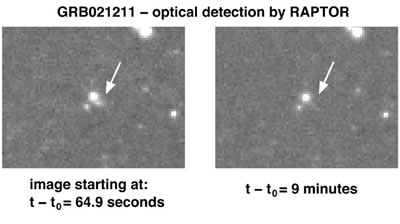

About half of all gamma ray bursts (GRB) are accompanied by an optical afterglow, formed as the surrounding interstellar medium is shocked by the explosion which creates the GRB. Dark bursts are those GRBs for which an optical transient is not observed, and it is thought that either the light is hidden by dust, or that the afterglow fades beyond detection before the first observations are made at visible wavelengths.
In the not too distant past, all GRBs were dark bursts – the first optical afterglow was only discovered in 1997. Since then, and with the formation of a network of satellites and ground based observatories primed to localise and rapidly follow-up on GRB detections, the discovery and study of GRB afterglows has become much more common. Despite this, dark bursts still exist.

Credit: Image taken by the RAPTOR telescope and RAPTOR team at Los Alamos National Laboratory. Copyright 2002 LANL and the University of California.
There is, however, increasing evidence that there are no true dark bursts, and that all GRBs are accompanied by an optical afterglow. Sometimes you just have to be very quick to see it! An example of this occurred in 2002 when three optical telescopes were trained on the position of a GRB within 1 minute of the detection of the burst. At 65 seconds after the burst, they imaged a very rapidly fading optical transient, which was extremely faint after 9 minutes, and completely undetectable after 2 hours. It is only very recently that such rapid follow-up has been possible, and perhaps as the field matures, dark bursts will be shown to not exist.